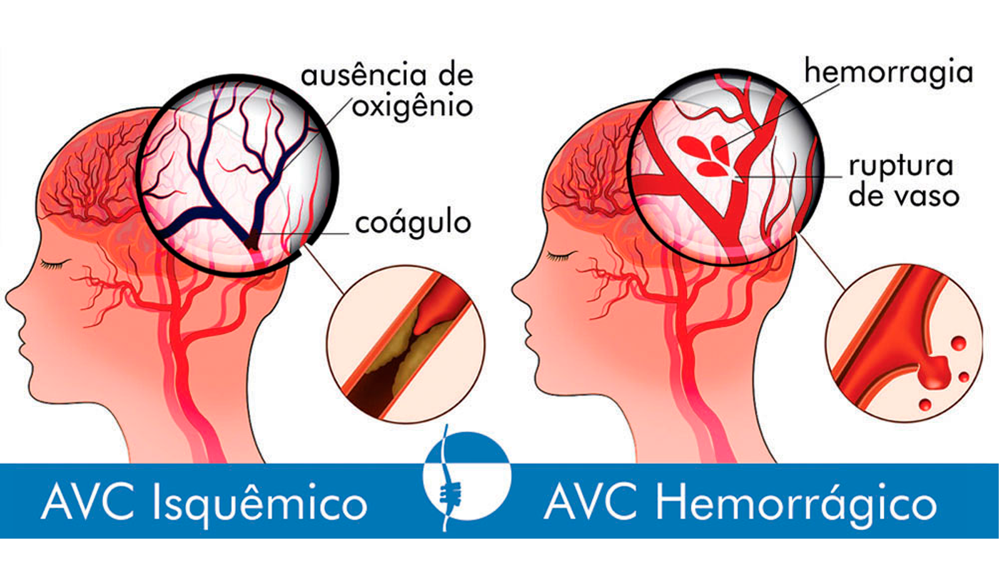
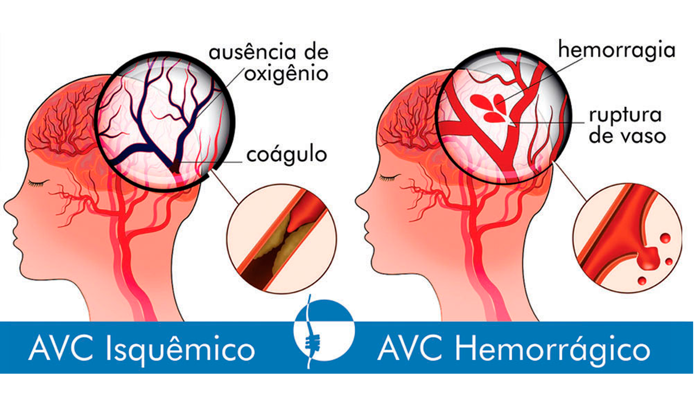

Acidente Vascular Cerebral (AVC)
 

O Acidente Vascular Cerebral (AVC) acontece quando vasos que levam sangue ao cérebro entopem ou se rompem, provocando a paralisia da área cerebral que ficou sem circulação sanguínea. É uma doença que acomete mais os homens e é uma das principais causas de morte, incapacitação e internações em todo o mundo.
Quanto mais rápido for o diagnóstico e o tratamento do AVC, maiores serão as chances de recuperação completa. Desta forma, torna-se primordial ficar atento aos sinais e sintomas e procurar atendimento médico imediato.
Existem dois tipos de AVC, que ocorrem por motivos diferentes:
-
AVC hemorrágico.
-
AVC isquêmico.
O que é um AVC hemorrágico?
O AVC hemorrágico ocorre quando há rompimento de um vaso cerebral, provocando hemorragia. Esta hemorragia pode acontecer dentro do tecido cerebral ou na superfície entre o cérebro e a meninge. É responsável por 15% de todos os casos de AVC, mas pode causar a morte com mais frequência do que o AVC isquêmico.
O que é um AVC Isquêmico?
O AVC isquêmico ocorre quando há obstrução de uma artéria, impedindo a passagem de oxigênio para células cerebrais, que acabam morrendo. Essa obstrução pode acontecer devido a um trombo (trombose) ou a um êmbolo (embolia). O AVC isquêmico é o mais comum e representa 85% de todos os casos.
SINTOMAS:
Existem alguns sinais que o corpo dá que ajudam a reconhecer um Acidente Vascular Cerebral. Os principais sinais de alerta para qualquer tipo de AVC são:
-
fraqueza ou formigamento na face, no braço ou na perna, especialmente em um lado do corpo;
-
confusão mental;
-
alteração da fala ou compreensão;
-
alteração na visão (em um ou ambos os olhos);
-
alteração do equilíbrio, coordenação, tontura ou alteração no andar;
-
dor de cabeça súbita, intensa, sem causa aparente.
IMPORTANTE: Somente médicos e cirurgiões-dentistas devidamente habilitados podem diagnosticar doenças, indicar tratamentos e receitar remédios. As informações disponíveis em Dicas em Saúde possuem apenas caráter educativo.
 Aperte aqui para
ligar para os bombeiros!
Aperte aqui para
ligar para os bombeiros!
Primeiro Socorros relacionados...
Hipertensão; Diabetes tipo 2; Colesterol alto; Sobrepeso; Obesidade; Tabagismo; Uso excessivo de álcool; Idade avançada; Sedentarismo; Uso de drogas ilícitas; Histórico familiar; Ser do sexo masculino.
O AVC hemorrágico tem como causa, principalmente, a pressão alta descontrolada e a ruptura de um aneurisma. No entanto, também pode ser provocado por outros fatores, como:
Hemofilia ou outros distúrbios coagulação do sangue; Ferimentos na cabeça ou no pescoço; Tratamento com radiação para câncer no pescoço ou cérebro; Arritmias cardíacas; Doenças das válvulas cardíacas; Defeitos cardíacos congênitos; Vasculite (inflamação dos vasos sanguíneos), que pode ser provocada por infecções a partir de doenças como sífilis, doença de Lyme, vasculite e tuberculose; Insuficiência cardíaca; Infarto agudo do miocárdio.
O AVC isquêmico se divide em quatro subgrupos, com causas distintas:
AVC isquêmico aterotrombótico: provocado por doença que causa formação de placas nos vasos sanguíneos maiores (aterosclerose), provocando a oclusão do vaso sanguíneo ou formação de êmbolos.
AVC isquêmico cardioembólico: ocorre quando o êmbolo causador do derrame parte do coração.
AVC isquêmico de outra etiologia: é mais comum em pessoas jovens e pode estar relacionado a distúrbios de coagulação no sangue.
AVC isquêmico criptogênico: ocorre quando a causa do AVC isquêmico não foi identificada, mesmo após investigação detalhada pela equipe médica.